CAMSHAFT > INSTALLATION |
| 1. CHECK INJECTOR COMPENSATION CODE |
 |
After replacing fuel injector(s) with new one(s), input compensation code(s) of fuel injector(s) into ECM as follows:
Input the compensation code(s), which is/are imprinted on the head portion(s) of the new fuel injector(s), into the intelligent tester.
Input the new compensation code(s) into the ECM using the tester.
Turn the tester off and turn the engine switch off.
Wait for at least 30 seconds.
Turn the engine switch on (IG) and turn the tester on.
Clear DTC P1601 stored in the ECM using the tester (Click here).
Register compensation code.

Connect the intelligent tester to the DLC3.
Turn the engine switch on (IG).
Turn the tester on.
 |
Enter the following menus: Powertrain / Engine / Utility / Injector Compensation.
Press Next.
 |
Press Next again to proceed.
 |
Select "Set Compensation Code".
Press Next.
 |
Select the number of the cylinder corresponding to the fuel injector compensation code that you want to read.
Press Next.
 |
Register compensation code.
 |
 |
Check that the compensation code displayed on the screen is correct by comparing it with the 30 digit alphanumeric value on the head portion of the fuel injector.
Press Next to register the compensation code in the ECM.
 |
If you want to continue with other compensation code registrations, press Next. To finish the registration, press Cancel.
Turn the engine switch off and then turn the tester off.
Wait for at least 30 seconds.
Turn the engine switch on (IG) and then turn the tester on.
Clear DTC P1601 stored in the ECM using the tester (Click here).
| 2. INSTALL NO. 3 AND NO. 4 CAMSHAFTS |
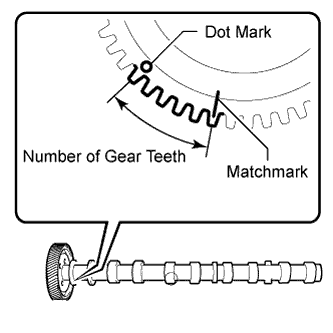 |
 |
Add more than 19 cc (1.16 cu. in.) of engine oil into the cylinder head side oil holes.
 |
Apply engine oil to the rollers of the valve rocker arms and the camshaft housing of the cylinder head.
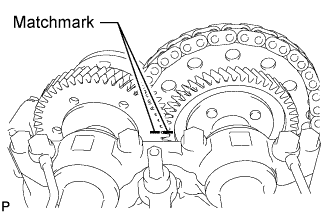 |
Install the No. 3 and No. 4 camshafts.
Apply engine oil to the camshaft journals, lobes, thrust portion and gears.
Align the matchmarks of the No. 3 and No. 4 camshaft timing gears as shown in the illustration.
 |
Place the camshafts into the cylinder head.
 |
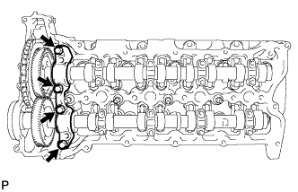 |
Install the No. 4 camshaft bearing cap.
Align the No. 4 camshaft bearing cap and the ring pins of the No. 5 camshaft bearing cap.
Temporarily install the 4 bolts by hand.
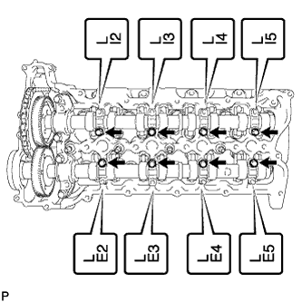 |
Install the No. 3 camshaft bearing caps.
Confirm the marks and numbers on the camshaft bearing caps and place them in their proper position and direction.
Temporarily install the 8 bolts, which are not installed with the oil feed pipe, by hand.
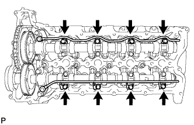 |
Temporarily install the No. 3 and No. 4 camshaft oil feed pipes with the 8 bolts by hand.
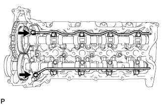 |
Temporarily install the 2 union bolts by hand.
 |
Uniformly tighten the 20 bolts in several steps in the order shown in the illustration.
 |
Tighten the 2 union bolts.
 |
Remove the service bolt from the No. 4 camshaft timing gear.
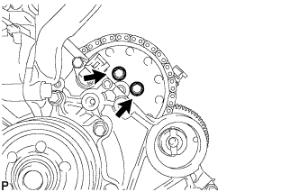 |
Temporarily install the No. 2 timing chain and No. 2 camshaft timing sprocket to the No. 3 camshaft with the 2 bolts.
 |
Using SST, hold the No. 2 camshaft timing sprocket. Tighten the 2 bolts.
Rotate the crankshaft pulley clockwise so that the 2 remaining pump drive shaft gear bolts can be installed.
Temporarily install the 2 bolts to the No. 3 camshaft.
|
Using SST, hold the No. 2 camshaft timing sprocket. Tighten the 2 bolts.
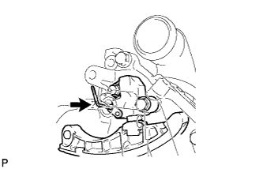 |
Remove the hexagon wrench from the No. 2 chain tensioner.
Remove the adhesive from the threads of the taper screw plug and the bolt hole of the timing gear case.
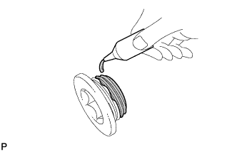 |
Apply adhesive to 3 or more threads of the taper screw plug.
 |
Using a 10 mm hexagon wrench, install the taper screw plug.
| 3. INSTALL NO. 1 AND NO. 2 CAMSHAFTS |
|
Add more than 19 cc (1.16 cu. in.) of engine oil into the cylinder head side oil holes.
|
Apply engine oil to the rollers of the valve rocker arms and the camshaft housing of the cylinder head.
Install the No. 1 and No. 2 camshafts.
Apply engine oil to the camshaft journals, lobes, thrust portion and gears.
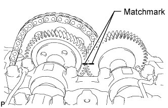 |
Align the matchmarks of the No. 1 and No. 2 camshaft timing gears as shown in the illustration.
 |
Place the 2 camshafts into the cylinder head.
|
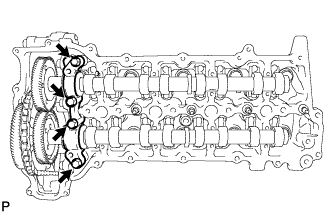 |
Install the No. 1 camshaft bearing cap.
Align the No. 1 camshaft bearing cap and the ring pins of the No. 2 camshaft bearing cap.
Temporarily install the 4 bolts by hand.
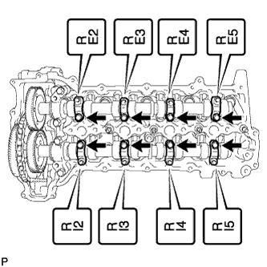 |
Install the No. 3 camshaft bearing caps.
Confirm the marks and numbers on the camshaft bearing caps and place them in their proper position and direction.
Temporarily install the 8 bolts, which are not installed with the oil feed pipe, by hand.
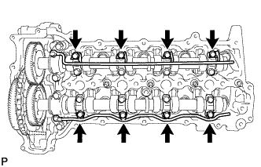 |
Temporarily install the No. 1 and No. 2 camshaft oil feed pipes with the 8 bolts by hand.
 |
Temporarily install the 2 union bolts by hand.
 |
Uniformly tighten the 20 bolts in several steps in the order shown in the illustration.
|
Tighten the 2 union bolts.
|
Remove the service bolt from the No. 1 camshaft timing gear.
Temporarily install the No. 1 timing chain and No. 1 camshaft timing sprocket to the No. 2 camshaft.
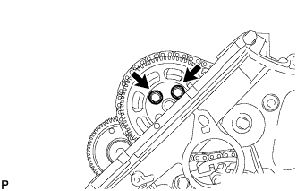 |
Temporarily install the pump drive shaft gear with the 2 bolts.
 |
Using SST, hold the pump drive shaft gear. Tighten the 2 bolts.
Rotate the crankshaft clockwise so that the 2 remaining pump drive shaft gear bolts can be installed.
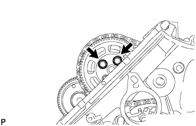 |
Temporarily install the 2 bolts to the pump drive shaft gear.
|
Using SST, hold the pump drive shaft gear. Tighten the 2 bolts.
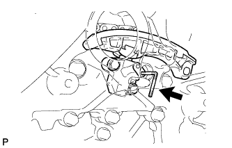 |
Remove the hexagon wrench.
Remove the adhesive from the threads of the taper screw plug and the bolt hole of the timing gear case.
Apply adhesive to 3 or more threads of the taper screw plug.
 |
Using a 10 mm hexagon wrench, install the taper screw plug.
| 4. CHECK NO. 1 CYLINDER TO TDC/COMPRESSION |
Rotate the crankshaft clockwise 3 times or more, and check that the timing marks of the camshafts (1 dot mark each) align. If the timing marks of the camshafts do not align, repeat the "Install No. 3 and No. 4 Camshafts" and "Install No. 1 and No. 2 Camshafts" procedures.
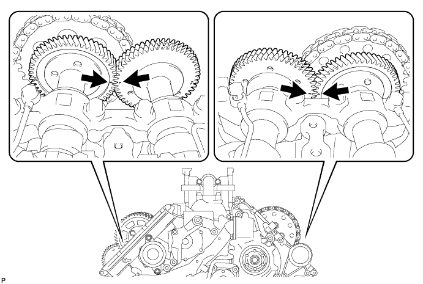
| 5. INSTALL FUEL INJECTOR LH |
 |
Install 4 new injection nozzle seats to the cylinder head.
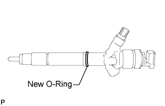 |
Apply a light amount of clean engine oil to 4 new O-rings.
Install the O-rings to each injector as shown in the illustration.
Insert the 4 injectors into the cylinder head.
For an injector that has been replaced with a new injector, register the injector compensation code.
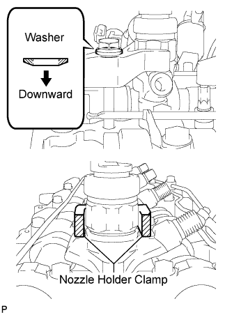 |
Temporarily install 4 new washers and the 4 nozzle clamps with the 4 clamp bolts.
 |
Temporarily install the common rail LH with the 2 bolts.
 |
Temporarily install the 4 injection pipes to the common rail and injector.
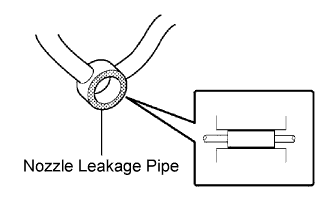 |
Check the nozzle leakage pipe. Check that there are no scratches or dents on the 5 union seal surfaces. If scratches or dents are present, replace the nozzle leakage pipe.
Set the leakage pipe and 5 new gaskets in place.
 |
Temporarily install the leakage pipe with the 4 hollow screws and union bolt.
 |
Tighten the 4 holder clamp bolts.
Remove the 4 injection pipes.
Remove the 2 bolts and common rail LH.
 |
Tighten the 4 hollow screws.
 |
Tighten the union bolt.
| 6. INSTALL FUEL INJECTOR RH |
|
Install 4 new injection nozzle seats to the cylinder head.
Apply a light amount of clean engine oil to 4 new O-rings.
Install the O-rings to each injector as shown in the illustration.
Insert the 4 injectors into the cylinder head.
For an injector that has been replaced with a new injector, register the injector compensation code.
Temporarily install 4 new washers and the 4 nozzle clamps with the 4 clamp bolts.
|
Temporarily install the 4 injection pipes to the common rail and injector.
Check the nozzle leakage pipe. Check that there are no scratches or dents on the 5 union seal surfaces. If scratches or dents are present, replace the nozzle leakage pipe.
Set the leakage pipe and 5 new gaskets in place.
 |
Temporarily install the leakage pipe with the 4 hollow screws and union bolt.
 |
Tighten the 4 holder clamp bolts.
Remove the 4 injection pipes.
 |
Tighten the 4 hollow screws.
 |
Tighten the union bolt.
| 7. INSTALL NOZZLE HOLDER GASKET LH |
 |
Press 4 new nozzle holder gaskets into the cylinder head cover LH.
| 8. INSTALL CYLINDER HEAD COVER SUB-ASSEMBLY LH |
 |
Apply seal packing as shown in the illustration.
Install a new gasket to the cylinder head cover.
 |
Temporarily install the cylinder head cover with the 17 bolts. Tighten the 17 bolts in the order shown in the illustration.
| 9. INSTALL NOZZLE HOLDER SEAL LH |
Press 4 new holder seals into the cylinder head cover LH.
| 10. INSTALL OIL SEPARATOR ASSEMBLY |
 |
Install a new gasket to the oil separator.
Install the oil separator with the 3 bolts.
| 11. INSTALL NOZZLE HOLDER GASKET RH |
|
Press 4 new nozzle holder gaskets into the cylinder head cover RH.
| 12. INSTALL CYLINDER HEAD COVER SUB-ASSEMBLY RH |
 |
Apply seal packing as shown in the illustration.
Install a new gasket to the cylinder head cover.
 |
Temporarily install the cylinder head cover with the 18 bolts. Tighten the 18 bolts in the order shown in the illustration.
| 13. INSTALL NOZZLE HOLDER SEAL RH |
Press 4 new holder seals into the cylinder head cover RH.
| 14. INSTALL CYLINDER HEAD COVER SILENCER LH |
 |
Install the cylinder head cover silencer with the 3 bolts.
| 15. INSTALL CYLINDER HEAD COVER SILENCER RH |
 |
Install the cylinder head cover silencer with the 3 bolts.
| 16. CONNECT NO. 3 VENTILATION HOSE |
 |
| 17. CONNECT NO. 2 VENTILATION HOSE |
 |
| 18. INSTALL VACUUM PUMP ASSEMBLY |
 |
Apply engine oil to 2 new O-rings.
Install the 2 O-rings to the vacuum pump.
 |
Install the vacuum pump so that the coupling teeth of the vacuum pump (labeled A) and the groove of the camshaft (labeled B) are aligned.
 |
Install the vacuum pump with the 3 bolts.
| 19. INSTALL NO. 1 VACUUM TRANSMITTING PIPE SUB-ASSEMBLY |
 |
Install the vacuum transmitting pipe with the 3 bolts.
Connect the 2 vacuum hoses.
| 20. INSTALL NO. 1 VACUUM SWITCHING VALVE ASSEMBLY (for Engine Mounting) |
 |
Install vacuum switching valve with the bolt.
Connect the 2 vacuum hoses.
| 21. INSTALL NO. 2 IDLER PULLEY BRACKET (w/ Viscous Heater) |
 |
Temporarily install the No. 2 idler pulley bracket with the bolt.
Temporarily install the 2 bolts to the No. 2 idler pulley bracket bolt hole.
 |
Uniformly tighten the 3 bolts of the No. 2 idler pulley bracket in the order shown in the illustration.
| 22. INSTALL NO. 2 IDLER PULLEY (w/ Viscous Heater) |
 |
Install the collar, No. 2 idler pulley and cover with the bolt.
| 23. INSTALL INJECTION PIPE RH |
 |
Using a union nut wrench, install the 4 injection pipes.
 |
 |
Install the 4 injection pipe clamps with the 2 nuts.
| 24. CONNECT NO. 2 ENGINE WIRE |
 |
Connect the No. 2 engine wire with the 3 bolts.
Attach the 2 wire harness clamps.
| 25. INSTALL FUEL FILTER TO INJECTION PUMP FUEL PIPE SUB-ASSEMBLY |
 |
Install the fuel filter to injection pump fuel pipe with the bolt.
Connect the 2 hoses to the fuel pipe.
| 26. INSTALL COMMON RAIL ASSEMBLY LH |
 |
Install the common rail with the 2 bolts.
| 27. INSTALL INJECTION PIPE LH |
 |
Using a union nut wrench, install the 4 injection pipes.
|
 |
Install the 4 injection pipe clamps with the 2 nuts.
| 28. INSTALL NO. 6 INJECTION PIPE SUB-ASSEMBLY |
 |
w/ EGR System:
Temporarily install the No. 6 injection pipe to the common rail LH and RH.
Install the 2 No. 2 injection pipe clamps with the 2 nuts.
Using a union nut wrench, tighten the No. 6 injection pipe ends.
|
 |
w/o EGR System:
Temporarily install a new No. 6 injection pipe to the common rail LH and RH.
Install the bracket to the No. 3 intake manifold with the bolt.
Install the No. 2 injection pipe clamp with the nut.
Using a union nut wrench, tighten the No. 6 injection pipe ends.
|
| 29. INSTALL NO. 2 FUEL PIPE SUB-ASSEMBLY |
 |
Temporarily install a new gasket and the No. 2 fuel pipe with the union bolt, nut and bolt.
Tighten the union bolt, nut and bolt in the order shown in the illustration.
Install the No. 2 injection pipe clamp with the bolt.
Connect the fuel hose to the No. 5 nozzle leakage pipe.
| 30. CONNECT ENGINE WIRE |
RH side:
 |
Install the engine wire harness protector with the 3 bolts labeled A.
Connect the 7 connectors.
Attach the wire harness clamp.
Install the wire harness bracket with the bolt labeled B.
Install the glow plug wire harness with the nut labeled C.
 |
Attach the 5 wire harness clamps and connect the 4 connectors.
LH side:
 |
Install the engine wire harness protector with the 2 bolts labeled A.
Connect the 8 connectors.
Install the wire harness bracket with the bolt labeled B.
for RHD:
Connect the wire harness with the wire harness clamp holder labeled C.
 |
Attach the 3 wire harness clamps and connect the 2 connectors.
 |
Attach the 3 wire harness clamps and connect the 4 connectors.
 |
Connect the wire harness with the wire harness clamp holder labeled B.
Attach the ground wire clamp labeled A to the relay block side.
Install the ground wire to the body panel with the bolt.
 |
Connect the 4 connectors to the injector driver.
Install the ground wire with the bolt.
Connect the wire harness holder to the relay block.
Connect the 4 connectors to the relay block.
Connect the wire harness with the wire harness clamp holder.
 |
for RHD:
Connect the wire harness with the wire harness clamp holder.
 |
Connect the ECM connector to the ECM.
Connect the wire harness with the wire harness clamp holder.
Attach the wire harness tab labeled A to the relay block.
Connect the 4 connectors to the relay block.
 |
for LHD:
Connect the wire harness with the wire harness clamp holder.
Connect the ECM connector to the ECM.
Attach the wire harness tab labeled A to the relay block.
Connect the 4 connectors to the relay block.
| 31. CONNECT FUEL HOSE |
 |
| 32. INSTALL NO. 4 WATER BY-PASS PIPE |
 |
w/ EGR System:
Connect the 4 water hose ends, and temporarily install the No. 4 water by-pass pipe with the 2 bolts and nut.
First tighten the 2 bolts and then tighten the nut.
 |
w/o EGR System:
Connect the 3 water hose ends, and temporarily install the No. 4 water by-pass pipe with the 2 bolts and nut.
First tighten the 2 bolts and then tighten the nut.
| 33. INSTALL NO. 3 WATER BY-PASS PIPE (w/o Viscous Heater) |
 |
Connect the 2 water hose ends, and install the No. 3 water by-pass pipe with the 2 bolts.
| 34. INSTALL TUBE CONNECTOR TO FLEXIBLE HOSE TUBE (for Manual Transaxle) |
 |
Temporarily install the flare nut of the tube connector to flexible hose tube to the clutch tube to release cylinder 2 way by hand.
 |
Temporarily install the tube connector to flexible hose tube with the 2 bolts.
Tighten the bolt labeled A.
| 35. INSTALL AIR TUBE SUB-ASSEMBLY LH |
 |
Install the air tube to the throttle body.
Align the embossed mark of the throttle body with the paint mark of the No. 4 air hose.
 |
Tighten the hose clamp so that it is 7 to 11 mm (0.276 to 0.433 in.) from the end of the hose as shown in the illustration.
| 36. INSTALL CLUTCH HOSE (for Manual Transmission) |
 |
Connect the clutch hose to the air tube with the bolt labeled A.
Temporarily install the clutch hose to the clutch master cylinder tube to flexible hose tube and tube connector to flexible hose tube, and fix it in place with the 2 clips.
Tighten the bolt labeled B.
Tighten the flexible hose tube.
 |
Using a 10 mm union nut wrench, tighten the 2 flare nuts of the flexible hose tube.
 |
Using a 10 mm union nut wrench, tighten the flare nut of the flexible hose tube.
| 37. INSTALL AIR TUBE SUB-ASSEMBLY RH |
 |
Install the air tube to the throttle body.
Align the embossed mark of the throttle body with the paint mark of the No. 4 air hose.
|
Tighten the hose clamp so that it is 7 to 11 mm (0.276 to 0.433 in.) from the end of the hose as shown in the illustration.
| 38. INSTALL NO. 2 ENGINE OIL LEVEL DIPSTICK GUIDE |
 |
Apply a light coat of engine oil to a new O-ring.
Install the O-ring to the No. 2 engine oil level dipstick guide.
Install the No. 2 engine oil level dipstick guide with the 2 bolts.
Connect the ventilation hose to the cylinder head cover RH.
 |
Connect the wire harness clamp to the No. 2 engine oil level dipstick guide bracket.
| 39. CONNECT WATER HOSE SUB-ASSEMBLY |
 |
| 40. INSTALL NO. 2 AIR CLEANER PIPE SUB-ASSEMBLY |
 |
Connect the No. 2 air cleaner pipe to the No. 2 intake air connector pipe.
Connect the ventilation hose to the oil separator.
Install the pipe with the bolt.
Tighten the hose clamp.
| 41. INSTALL NO. 4 AIR TUBE |
 |
Install the No. 4 air tube with the bolt.
Tighten the hose clamp.
 |
Install the suction hose with the bolt.
| 42. INSTALL NO. 2 AIR HOSE |
 |
Connect the No. 2 air hose with the hose clamp.
| 43. INSTALL NO. 1 AIR CLEANER PIPE SUB-ASSEMBLY |
 |
Connect the No. 1 air cleaner pipe to the No. 1 intake air connector pipe.
Install the pipe with the bolt.
Tighten the hose clamp.
| 44. INSTALL NO. 3 AIR TUBE |
 |
Install the No. 3 air tube with the bolt.
Tighten the hose clamp.
 |
Install the wire harness bracket with the bolt.
 |
Install the ground wire with the nut, and attach the wire harness clamp.
| 45. INSTALL NO. 1 AIR HOSE |
 |
Connect the No. 1 air hose with the hose clamp.
| 46. INSTALL NO. 1 IDLER PULLEY BRACKET (w/ Viscous Heater) |
 |
Install the No. 1 idler pulley bracket with the bolt.
| 47. INSTALL VISCOUS HEATER ASSEMBLY WITH MAGNET CLUTCH (w/ Viscous Heater) |
 |
Install the heater assembly with the 2 bolts.
Connect the 2 heater hoses.
Using pliers, grip the claws of the clips and slide the 2 clips.
Connect the connector and attach the clamp.
| 48. INSTALL HEATER WATER PIPE SUB-ASSEMBLY (w/ Viscous Heater) |
 |
Connect the 4 water hose ends, and install the water pipe with the 4 bolts.
| 49. INSTALL INTERCOOLER ASSEMBLY |
 |
Install a new gasket to the air tube RH.
 |
Install a new gasket to the air tube LH.
 |
Align the No. 1 and No. 2 air hoses and intercooler pipes and connect them, and install the intercooler with the 2 bolts and 2 nuts labeled A in the illustration.
Temporarily install the 4 nuts labeled B in the illustration.
Tighten the air tube LH and RH with the 4 nuts labeled B shown in the illustration.
 |
Connect the vacuum hose, intake air temperature sensor connector and turbo pressure sensor connector.
 |
Tighten the clamp of the No. 2 air hose.
 |
Tighten the clamp of the No. 1 air hose.
| 50. INSTALL FAN SHROUD WITH FAN |
Install the shroud together with the fluid coupling fan between the radiator and engine components.
 |
Temporarily install the fluid coupling fan to the fan bracket with the 4 nuts.
 |
Attach the shroud claws to the radiator.
Install the shroud with the 2 bolts.
|
Tighten the 4 nuts of the fluid coupling fan.
| 51. INSTALL OIL COOLER TUBE (for Automatic Transmission) |
 |
Temporarily install the oil cooler tube to the fan shroud with the bolt labeled A. Install the bolt labeled B. Then tighten the bolt labeled A to the specified torque.
 |
Connect the inlet No. 4 oil cooler hose as shown in the illustration.
 |
Connect the inlet No. 2 and No. 3 oil cooler hoses as shown in the illustration.
 |
Connect the inlet and outlet No. 1 oil cooler hoses as shown in the illustration.
Pass the hose through the flexible hose clamp and close the clamp shown in the illustration.
| 52. INSTALL V-RIBBED BELT |
 |
Attach a wrench to the V-ribbed belt tensioner bracket and turn the wrench clockwise.
 |
Install the V-ribbed belt as shown in the illustration.
 |
Check that the belt fits properly in the ribbed grooves.
| 53. INSTALL NO. 3 IDLER PULLEY (w/ Viscous Heater) |
 |
Align the No. 3 idler pulley bracket knock pin and No. 1 idler pulley bracket knock pin hole and install the No. 3 idler pulley with the nut.
| 54. INSTALL NO. 1 IDLER PULLEY (w/ Viscous Heater) |
 |
Install the collar, No. 1 idler pulley and cover with the bolt.
| 55. INSTALL V-RIBBED BELT (w/ Viscous Heater) |
 |
Install the V-ribbed belt as shown in the illustration.
 |
Temporarily install the lock nut, and turn the bolt clockwise.
 |
Using a belt tension gauge, adjust belt tension.
| Item | Specified Condition |
| New belt | 400 to 650 N (41 to 66 kgf, 89.9 to 146.1 lbf) |
| Used belt | 300 to 500 N (31 to 51 kgf, 67.4 to 112.4 lbf) |
 |
Tighten the nut.
|
Check that the belt fits properly in the ribbed grooves.
| 56. INSTALL VANE PUMP ASSEMBLY |
 |
Apply a light coat of engine oil to a new O-ring, and install it to the vane pump.
Install the vane pump with 2 new nuts.
| 57. INSTALL RADIATOR RESERVOIR ASSEMBLY |
 |
Install the radiator reservoir with the 3 bolts.
Connect the 2 hoses to the upper radiator tank and water inlet.
| 58. INSTALL NO. 1 OIL RESERVOIR BRACKET |
 |
Install a new bracket with the 2 bolts.
| 59. INSTALL VANE PUMP OIL RESERVOIR ASSEMBLY |
 |
Install the vane pump oil reservoir to the bracket.
| 60. INSTALL INTAKE AIR CONNECTOR |
 |
Connect the intake air connector to the No. 1 and No. 2 air cleaner pipes.
Install the connector with the 2 bolts.
Tighten the 2 hose clamps.
 |
Attach the 3 wire harness clamps.
w/o Viscous Heater:
Connect the connector to the water temperature sensor.
w/ Viscous Heater:
Connect the 2 connectors to the water temperature sensor and viscous with magnet clutch heater.
| 61. TEMPORARILY INSTALL NO. 1 AIR CLEANER HOSE |
 |
Temporarily install the air cleaner hose to the intake air connector.
| 62. INSTALL AIR CLEANER CAP SUB-ASSEMBLY |
 |
Connect the air cleaner cap to the air cleaner hose, and install the air cleaner cap with the 4 clamps.
Connect the mass air flow meter connector and attach the wire harness clamp to the air cleaner cap.
Attach the wire harness clamp.
 |
Align the protrusion of air cleaner cap and concave portion of air cleaner hose.
Tighten the 2 hose clamps.
| 63. INSTALL NO. 3 ENGINE ROOM WIRE |
Install the No. 3 engine room wire to the main battery and sub-battery positive terminals with the 2 nuts.
Connect the No. 3 engine room wire with the 4 clamps.

| 64. ADD ENGINE OIL |
Add fresh oil.
| Oil Grade | Oil Viscosity (SAE) |
| G-DLD-1, API CF-4, API CF or ACEA B1 (You may also use API CE or CD) | - 5W-30 - 10W-30 - 15W-40 - 20W-50 (5W-30 is best choice for fuel economy and good starting in cold weather). |
| Item | Specified Condition |
| Drain and refill with oil filter change | 9.0 liters (9.5 US qts, 8.0 Imp. qts) |
| Drain and refill without oil filter change | 8.0 liters (8.5 US qts, 7.0 Imp. qts) |
| Dry fill | 9.7 liters (10.3 US qts, 8.5 Imp. qts) |
Install the oil filler cap.
| 65. BLEED AIR FROM FUEL SYSTEM |
 |
Using the hand pump indicated by the arrow in the illustration, bleed the fuel system. Continue pumping until pumping becomes difficult.
| 66. BLEED CLUTCH LINE |
 |
Remove the release cylinder bleeder plug cap.
Connect a vinyl tube to the bleeder plug.
Depress the clutch pedal several times, and then loosen the bleeder plug while the pedal is depressed.
When fluid no longer comes out, tighten the bleeder plug, and then release the clutch pedal.
Repeat the previous 2 steps until all the air in the fluid is completely bled.
Tighten the bleeder plug.
Install the bleeder plug cap.
Check that all the air has been bled from the clutch line.
| 67. INSPECT FOR CLUTCH FLUID LEAK |
| 68. CONNECT CABLE TO NEGATIVE BATTERY TERMINAL |
Connect the cables to negative (-) main battery and sub-battery battery terminals.
| 69. ADD ENGINE COOLANT |
 |
Remove the engine air bleed cap.
 |
Connect a clear hose to the engine air bleed pipe.
 |
Using a wrench, remove the vent plug.
 |
Fill the radiator with TOYOTA SLLC to the radiator reservoir filler neck.
| Item | Specified Condition |
| Front heater only | 14.8 liters (15.6 US qts, 13.0 Imp. qts) |
| Front heater and rear heater | 17.6 liters (18.6 US qts, 15.5 Imp. qts) |
| Front heater with viscous heater | 15.2 liters (16.1 US qts, 13.4 Imp. qts) |
| Front heater and rear heater with viscous heater | 18.0 liters (19.0 US qts, 15.4 Imp. qts) |
|
Install the vent plug.
|
Disconnect the clear hose from the engine air bleed pipe.
|
Install the engine air bleed cap when coolant comes out.
Install the radiator reservoir cap.
Start the engine.
Maintain an engine speed of 3000 rpm for approximately 10 minutes so that the thermostat opens and air bleeding is performed.
Stop the engine, and wait until the engine coolant cools down to ambient temperature.
 |
Check that the coolant level is between the FULL and LOW lines.
If the coolant level is above the FULL line, drain coolant so that the coolant level is between the FULL and LOW lines.
| 70. INSPECT FOR FUEL LEAK |
Perform Active Test.
Connect the intelligent tester to the DLC3.
Turn the engine switch on (IG).
Start the engine.
Turn the intelligent tester ON.
Enter the following menus: Powertrain / Engine / Active Test.
Perform the Active Test.
| Tester Display | Test Detail | Control Range | Diagnostic Note |
| Test the Fuel Leak | Pressurizes fuel inside common rail and checks for fuel leaks | Stop/Start |
|
| 71. INSPECT FOR OIL LEAK |
| 72. INSPECT FOR COOLANT LEAK |
 |
Fill the radiator with coolant and attach a radiator cap tester to the radiator reservoir.
Warm up the engine.
Using the radiator cap tester, increase the pressure inside the radiator to 123 kPa (1.3 kgf/cm2, 17.8 psi), and check that the pressure does not drop.
If the pressure drops, check the hoses, radiator and water pump for leaks.
If no external leaks are found, check the cylinder block and cylinder head.
| 73. WARM UP ENGINE |
| 74. INSPECT FOR EXHAUST GAS LEAK |
| 75. INSTALL NO. 1 ENGINE UNDER COVER SUB-ASSEMBLY |
 |
Install the engine under cover with the 10 bolts.
| 76. INSTALL FRONT FENDER SPLASH SHIELD SUB-ASSEMBLY RH |
 |
Install the splash shield with the clip, and then install the 3 bolts and screw.
| 77. INSTALL FRONT FENDER SPLASH SHIELD SUB-ASSEMBLY LH |
Install the splash shield with the clip, and then install the 3 bolts and screw.
| 78. INSTALL FRONT FENDER APRON SEAL REAR LH |
 |
Install the front fender apron seal rear LH with the 4 clips.
| 79. INSTALL FRONT FENDER APRON SEAL FRONT LH |
 |
w/o KDSS:
Install the front fender apron seal front LH with the 4 clips.
 |
w/ KDSS:
Install the front fender apron seal front LH with the 3 clips.
| 80. INSTALL FRONT FENDER APRON SEAL REAR RH |
 |
Install the front fender apron seal rear RH with the 4 clips.
| 81. INSTALL FRONT FENDER APRON SEAL FRONT RH |
 |
Install the front fender apron seal front RH with the 3 clips.
| 82. INSTALL FRONT WHEEL |
| 83. INSTALL NO. 1 ENGINE COVER SUB-ASSEMBLY |
 |
Install the engine cover with the 2 nuts.
| 84. INSTALL COWL TOP VENTILATOR LOUVER SUB-ASSEMBLY |
 |
Push the ventilator louver in the direction indicated by the arrow in the illustration to attach the 17 claws and 2 clips and install the ventilator louver.
| 85. INSTALL HOOD TO COWL TOP SEAL |
 |
Attach the 12 clips and 4 clamps to install the hood to cowl top seal.
 |
Install the washer hose.
| 86. INSTALL FRONT WIPER ARM RH |
| 87. INSTALL FRONT WIPER ARM LH |
 |
Stop the wiper motor at the automatic stop position.
Clean the wiper pivot serration with a wire brush.
 |
Install the wiper arm and blade with the nut. Make sure that the wiper arm and blade comes to the position shown in the illustration.
| Position | Specified Condition |
| A | 16.8 to 36.8 mm (0.661 to 1.45 in.) |
| 88. INSTALL FRONT FENDER MAIN SEAL RH |
| 89. INSTALL FRONT FENDER MAIN SEAL LH |
 |
Attach the 3 clips to install the fender main seal.
| 90. INSTALL UPPER RADIATOR SUPPORT SEAL |
 |
Install the upper radiator support seal with the 7 clips.
| 91. INSPECT ENGINE IDLE SPEED |
When using the intelligent tester:
Warm up and stop the engine.
Connect the intelligent tester to the DLC3.
Turn the engine switch on (IG).
Enter the following menus:
Powertrain / Engine / Data List / Engine Speed.
Inspect the engine idle speed.
| Item | Specified Condition |
| for Automatic Transmission | 550 to 650 rpm |
| for Manual Transmission | 500 to 600 rpm |
Turn the engine switch off.
Disconnect the intelligent tester from the DLC3.
When not using the intelligent tester:
Warm up and stop the engine.
 |
Connect a tester probe of a tachometer to terminal 9 (TAC) of the DLC3 with SST.
Inspect the engine idle speed.
| Item | Specified Condition |
| for Automatic Transmission | 550 to 650 rpm |
| for Manual Transmission | 500 to 600 rpm |
Disconnect the tester probe from terminal 9 (TAC) of the DLC3.
| 92. INSPECT MAXIMUM ENGINE SPEED |
Start the engine.
Fully depress the accelerator pedal.
Check the maximum engine speed.
| 93. CHECK ENGINE OIL LEVEL |
Warm up the engine, stop the engine and wait 5 minutes. The engine oil level should be between the dipstick low level mark and full level mark.
If low, check for leakage and add oil up to the full level mark.
| 94. INSPECT ENGINE COOLANT LEVEL IN RESERVOIR |
|
Check that the engine coolant level is between the LOW and FULL lines when the engine is cold.
If the engine coolant is low, check for leaks and add "TOYOTA Super Long Life Coolant (SLLC)" or similar high quality ethylene glycol based non-silicate, non-amine, non-nitrite and non-borate coolant with long-life hybrid organic acid technology to the FULL line.